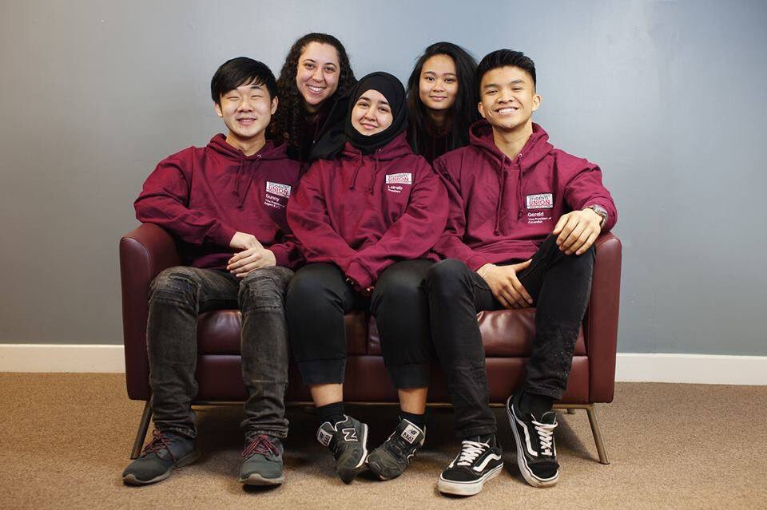

Science & Technology
We're excited to be a University partner with Tech.
#RWtech and have given 15 of our Computer Games students free tickets to the festival. https://tech.retail-week.com/
We're excited to be a University partner with Tech.
#RWtech and have given 15 of our Computer Games students free tickets to the festival. https://tech.retail-week.com/
That’s a wrap! What better way to end our week of graduations than with a brass band rendition of ‘It’s Coming Home’ ahead of tonight's #WorldCup semi-final. #WeAreWestminster #WestminsterGrad
Take part in our survey and have a chance to win a £100 High Street voucher.
Entries will close on Friday 20th July and the winner will be notified via e-mail.
Complete the survey here 👉 http://ow.ly/8Obs30kxZTw 🤞
The ceremony for @uw_fst is in full swing and students are crossing the stage to become graduates.
Congratulations everyone! #WestminsterGrad
The Plink Test designed by @UoWPsych 's very own @CathLoveday tests how strong your musical memories are! She discussed music and memory with the BBC over Mental Health Awareness week.
Meet your new @WestminsterSU Sabbatical Officers: Sunny, Lama, Lareb, Jamilla and Gerald. 👋 They'll be working
together to represent you on campus and ensure your voice is heard. #WeAreWestminster
See what they get up to this year over on 👉 @WestminsterSU

A new study with contributions from academics Professor Jimmy Bell and Dr Louise Thomas from the Research Centre for Optimal Health shows that specific patterns of fat distribution are linked to the presence of Coronary Heart Disease and Type 2 Diabetes: https://bit.ly/2s7IE8w
Wished you were a more confident public speaker? Join us and hear from Westminster alumna, award winning coach, author, and TEDx speaker @JennyGarrett, as she provides practical advice and tips on improving your public speaking skills. Book in 👉 http://goo.gl/XmrWZw